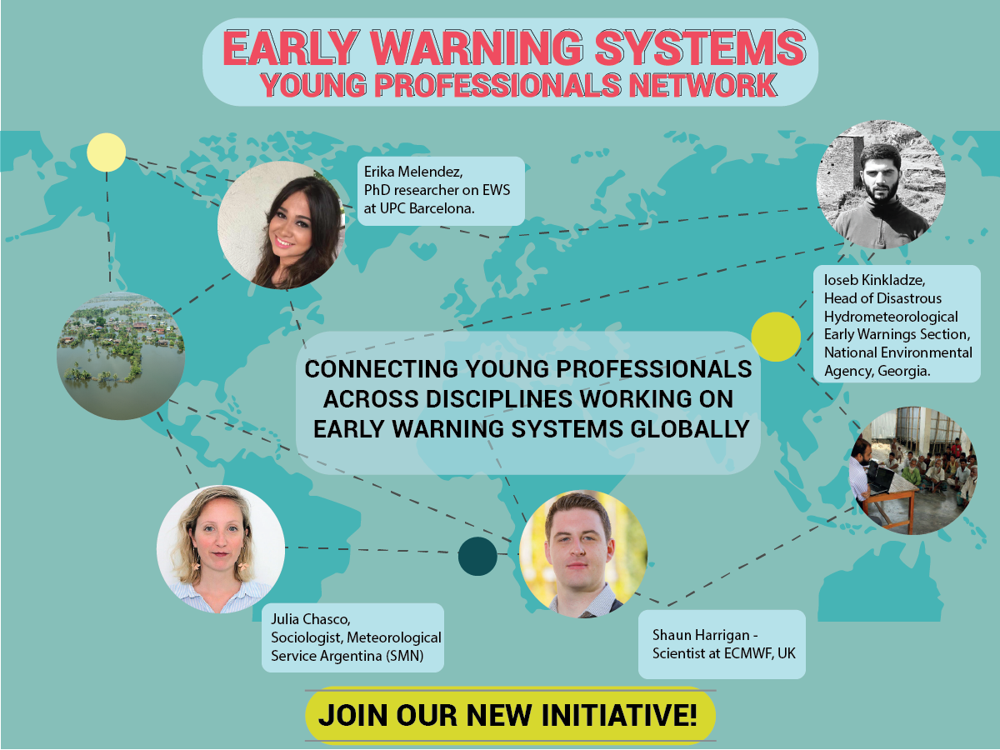

Water Youth Network
The Water Youth Network (WYN) is a global connector in the water sector. It consists of students and young professionals from all over the world and it encourages and enables the connection of young individuals and organizations within and beyond the water sector.
I joined WYN in 2017, and from that time I am a member of the Disaster Risk Reduction team. I act as the focal point of the team, being the link between the team’s coordinators and the rest members. During this period, I contributed in the improvement of the organisation’s database, and introduced tools (MailChimp, Zapier) for increasing the efficiency and effectiveness of the internal and external communication.

From 2018 I additionally joined the subgroup of Early Warning Systems Young Professionals Network. This initiative aims at connecting young researchers, policymakers and practitioners, for sharing knowledge and building interdisciplinary working relationships. Within this group I contribute in outreach activities and I recently co-convened a session we organized at the Understanding Risk 2020 conference. This interactive session, in the form of a serious game, aims to highlight the benefits and skills required for an interdisciplinary approach in Early Warning Systems. A remake of this session is planned for the coming EGU conference. The abstract is accessible in this link.
I was also responsible for the Social Media management, the organization of many internal and external activities, as the summer programme for the incoming trainees, cooperation with other NGOs, job raising, and presentations, and I finally represented IAESTE Greece in various international conferences.